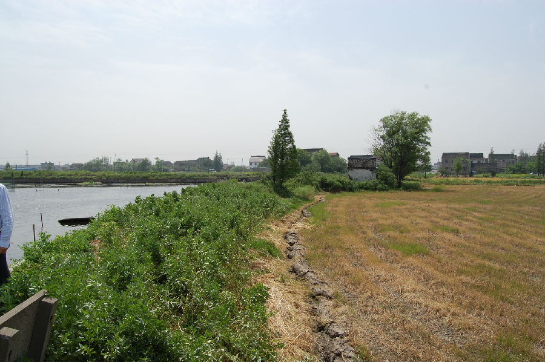

嘉兴市文物保护网 · 市级文物保护点 · 2020-11-02 · 原文

应家港遗址位于嘉兴市秀洲区油车港镇澄溪村3组，东南紧临油车港老镇，北面是红旗塘，东为南北向河。遗址地势低凹，分布在约300×400平方米的农田内，处于河港的包围之中。1958年左右开挖殷家港，出土了一些新石器时代器物，当时根据出土器物判断该遗址年代大致相当于新石器时代良渚文化至春秋战国时期。1983年二普时未见完整陶器及其他石器出土。本次普查也未在地面发现陶片及石器。高家汇遗址范围较大，延续时间长，有较高的历史和科学价值。1992年公布为嘉兴市文物保护点。